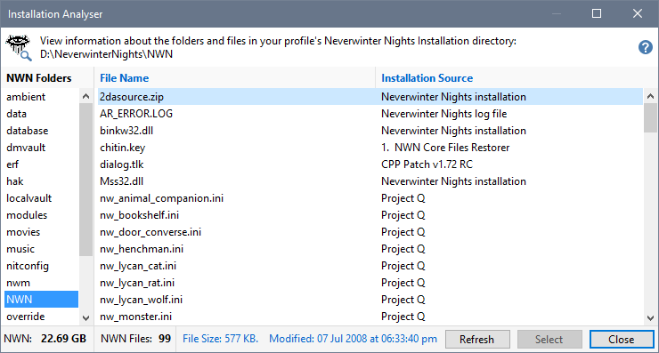
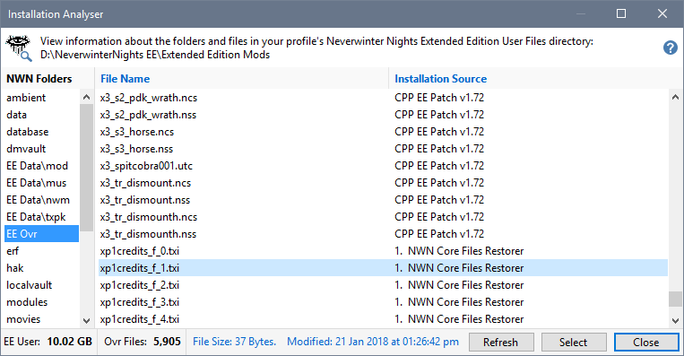
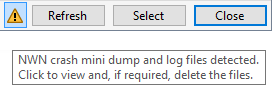
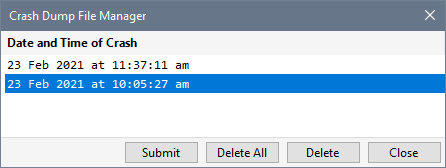

The Installation Analyser provides information about files in the Neverwinter Nights Installation or User Files folders. You can use the Analyser to determine the installation source of each file, which can be useful when trying to track down problems or performing a manual check for installation anomalies.
You can also use the Analyser to Convert NWM files to a MOD file so it can be opened with the Neverwinter Nights Toolset. See How can I open Official and Premium Mods in the Neverwinter Nights Toolset? for more information.
Click Installation Analyser from the Tools menu to open the Analyser.

You can use one of the shortcut keys or the right-click menu to view one of the folders with Windows File Explorer, display the Property sheet for the selected folder/file or display character summary information when a character file (.bic) is selected.

Double-click one of the NWN Folders to view its contents with Windows File Explorer.
Double-click a file in the file list to view its Property sheet.
The folder list for the Enhanced Edition is slightly different and shows selected Library folder contents and well as User Files folder information.

The Library folders are prefixed with EE and are not included in the total size shown (ie EE User reflects the total size of the User Files folder).
If there are Enhanced Edition mini-dump and log files present in the NWN folder, you will see the Crash Dump File Manager icon (warning triangle).

You can click the Crash Dump File Manager icon to view and delete crash information..

Each entry represents a mini-dump and log file (eg nwmain-crash-1614074726.dmp and nwmain-crash-1614074726.log). This means that when you delete entries, both files are deleted.
Press the Submit button to open File Explorer with the selected entry's dump file highlighted and load Beamdog's Customer Support page in your browser so you can post a bug report for Neverwinter Nights.
|
|
Click the menu illustration to view information about other tools. |